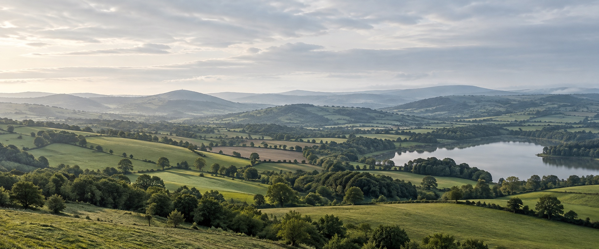

Landscape / Planning / Development
Landscape &
visual assessment.
Understand your site's setting.
Inform your next planning decision.
Assessment, visualisation and mitigation support for developers, planners, architects and landowners.
From early site considerations to planning submissions.

Landscape context
01 / Assessment services
Assessment, planning
and visualisation.
Start with the question your project needs to answer. If you are unsure of the scope, you can begin with a site discussion.
Assessment Services
Understand landscape character and potential visual effects.
01 Landscape & Visual Impact Assessment LVIA
For development proposals needing a structured assessment of landscape and visual effects.
- Output focus
- Baseline, effects assessment and reporting.
02 Landscape & Visual Appraisal LVA
For early design discussions or proposals where a proportionate landscape and visual appraisal is appropriate.
- Output focus
- Appraisal of likely effects and design considerations.
03 Landscape & Townscape Character LCA / TCA
For understanding the features that define a landscape or urban setting and its sensitivity to change.
- Output focus
- Character areas, context and sensitivity.
Planning & Visualisation
Communicate proposals and explore how they respond to their setting.

04 Zone of Theoretical Visibility ZTV
For exploring potential visibility and informing viewpoint selection as part of an assessment.
- Output focus
- Visibility mapping and assessment inputs.
05 Photomontages & Visualisation
For explaining a proposed development in its landscape context and supporting planning communication.
- Output focus
- Visual material appropriate to the agreed brief.
06 Landscape Mitigation Plans
For exploring design, planting and management measures to address landscape and visual effects.
- Output focus
- Mitigation proposals and supporting plans.
Not sure which service fits?
Start with your siteNot sure where to start?Find support for your project
Two optional questions to find services to discuss. The appropriate assessment scope needs a project conversation.
Skip the guide and discuss your site02 / Assessment approach
A clear process.
A proportionate scope.
Understand the setting, assess potential effects and communicate the findings. The scope depends on the site, proposal and planning context.
01Define the scopeProposal, stage and key questions
The starting point is the proposal, its planning context and the questions an assessment needs to address.
Discuss the scope02Understand the settingBaseline context and viewpoints
Desk study, site survey and selected viewpoints help organise the landscape and visual context.
Explore baseline outputs03Assess & refineEffects and design responses
Assessment considers potential effects alongside opportunities to refine design and mitigation measures.
Explore mitigation outputs04Communicate clearlyReporting and visual material
Findings are communicated through reporting and visual material appropriate to the agreed brief.
Explore visualisation
03 / Illustrative outputs
From site context
to clear communication.
Explore how assessment information can be presented.
Understand the site
and its wider setting.
Baseline information and selected viewpoints help organise the context for an assessment.
- Landscape character and setting
- Potential visual receptors
- Viewpoint selection
Choose a viewpoint to explore its role.
A · Landscape setting — a viewpoint can help describe the wider landscape context.
 ExistingConcept proposal
ExistingConcept proposalDrag or use the arrow keys. This is a fictional illustration, not a verified view.

Concept measures · Explore how proposed planting could form part of a design response.
All diagrams are original concept illustrations. They are not LVIA deliverables, technical analyses or verified views.
04 / Project sectors
Support for your
type of development.
Explore support for your type of development. Choose a sector to add its context to your project enquiry.
05 / Before you begin
A few useful answers.
You do not need a complete brief to explore the next step.
When can I start a conversation?
An early idea is enough to begin a discussion. The appropriate scope depends on the site, proposal and planning context. This concept form lets you preview that first enquiry.
What information should I prepare?
A site location and a short description of the proposal are useful starting points. Add the planning stage if known. The demonstration form marks required and optional fields clearly.
What if I am unsure which service I need?
Use the optional service guide, or select “Not sure — please advise” in the enquiry. A project conversation would establish the appropriate scope.
Start with your siteDoes this demo send an enquiry?
No. LVIA will not receive your enquiry, no email is sent and no information is saved. Please use fictional details to explore the form.
Start with a conversation
Tell us about
your site.
Share the location, your proposal and the support you are considering. An early idea is enough to begin.
Discuss a site or development Demo form only — nothing is sent or saved.